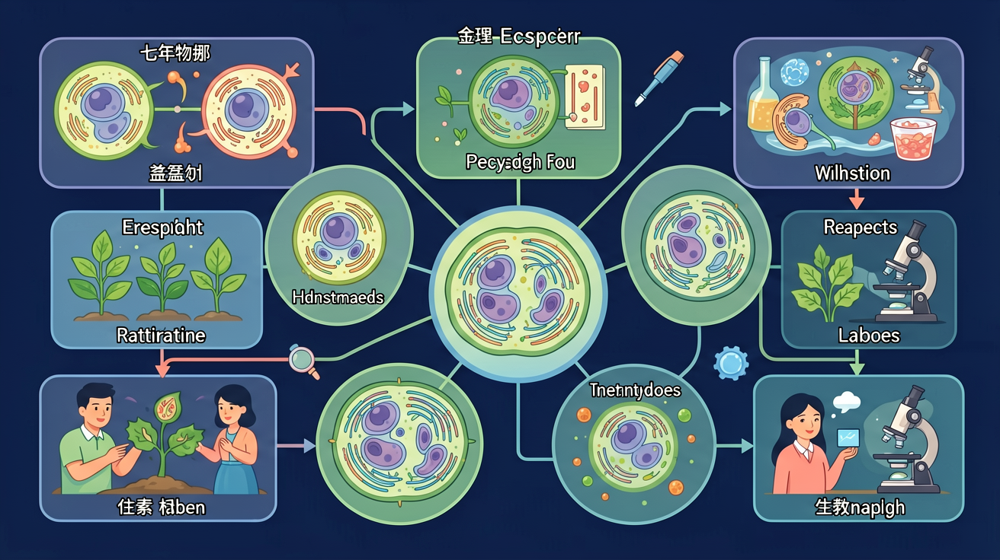

探索生命增殖的奥秘——有丝分裂五期染色体变化与细胞分化

开始新课之前先花一分钟自评起点，前测不计分，它告诉 AI 学伴从哪里帮你最有效。
1. 你能用自己的话解释「细胞分裂与分化 — 七年级生物互动课件」讲的是什么吗？
2. 你能在生活中举出一个与「细胞分裂与分化 — 七年级生物互动课件」相关的例子吗？
细胞分裂是指一个细胞通过一系列复杂过程分裂成两个或多个子细胞的现象。这是生物体生长、发育和繁殖的基础。例如，人类从受精卵发育成婴儿，就是通过无数次细胞分裂实现的。植物茎尖的生长点细胞不断分裂，使植物长高。细胞分裂还能修复受损组织，比如皮肤划伤后，周围细胞通过分裂填补伤口。细胞分裂过程中，遗传物质会精确复制并平均分配到子细胞中，确保遗传稳定性。
有丝分裂分为前期、中期、后期和末期四个阶段。前期时染色质螺旋化形成染色体，核膜逐渐消失；中期染色体排列在细胞中央的赤道板上，纺锤体形成；后期姐妹染色单体分离并移向细胞两极；末期新的核膜重新形成，细胞质分裂。以洋葱根尖细胞为例，在显微镜下可以观察到不同分裂阶段的细胞：前期细胞核膨大，中期染色体整齐排列，后期可见染色体被拉向两极，末期出现两个新细胞核。每个阶段都有特定蛋白质参与调控，确保分裂准确进行。
无丝分裂是原核生物和某些真核细胞（如蛙红细胞）的分裂方式，不形成纺锤体，细胞核先延长然后缢裂为二。例如大肠杆菌通过简单的二分裂增殖，其环状DNA复制后附着在细胞膜上，随着细胞膜内陷而分配到两个子细胞中。这种分裂方式效率高但精确性较低，可能导致遗传物质分配不均。某些创伤修复过程中，人体肝细胞也会暂时采用类似无丝分裂的方式快速增殖。与有丝分裂相比，无丝分裂不能保证遗传物质的完全均等分配。
1. 你观察过植物或动物生长的过程吗？能描述细胞是如何增多的吗？2. 如果伤口愈合时细胞不分裂会发生什么？3. 为什么子女会遗传父母的特征？
常见错因：学生容易混淆有丝分裂和减数分裂的染色体行为。误区包括认为所有细胞分裂都会减少染色体数量，或认为体细胞只进行有丝分裂。诊断发现，这种混淆源于对分裂目的理解不清——有丝分裂维持染色体数，减数分裂产生配子需要减半染色体数。通过对比表格和动画演示可有效纠正。
迁移探究：设计实验验证环境因素对细胞分裂的影响。可以选择洋葱根尖为材料，设置对照组（清水）和实验组（添加咖啡因/辐射等），通过显微镜观察计算分裂指数，分析不同条件下细胞分裂速率的变化，并解释其生物学意义。
关于细胞分化的正确理解是
比较洋葱根尖纵切永久装片中不同区域的细胞形态
1. 比较有丝分裂和减数分裂的主要区别是什么？2. 举例说明细胞分化在人体发育中的作用。3. 为什么说癌细胞是'失控'的细胞？
先独立作答，再点选项查看对错与错因。
显微镜下看到细胞核中出现染色体，说明细胞正在进行
樱花花瓣细胞与叶肉细胞形态差异的根本原因是
新芽生长过程中不会出现的情况是
细胞____使生物体细胞数量增加，细胞____形成不同组织
答案：分裂、分化
分裂实现增殖，分化实现特化
分生组织细胞特点是细胞壁____、细胞核____
答案：薄、大
薄壁利于分裂，大核含丰富遗传物质
对照前测，用三级任务检验自己的成长。能完成 Level 2 以上，说明你真的学会了。
Level 1 基础巩固 ⭐（识别与理解）：用自己的话解释「细胞分裂与分化 — 七年级生物互动课件」的核心结论，并说出它成立的条件。
Level 2 能力应用 ⭐⭐（应用与分析）：比较「细胞分裂与分化 — 七年级生物互动课件」与一个相近概念，说明它们的区别；或把它代入一个新例子做出判断。
Level 3 迁移挑战 ⭐⭐⭐（评价与创造）：设计一道以真实生活为情境的「细胞分裂与分化 — 七年级生物互动课件」小考题，考考同桌或 AI 学伴。